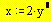

Turning Equations On or Off |
To prevent a region such as an equation or a graph from being calculated:
Click in the equation.
Choose Properties from the Format menu and click on the Calculation tab.
Click in the box next to "Disable Evaluation."
You'll see a small box next to the equation that indicates that evaluation is turned off. For example:

You can also right-click on the equation and disable or enable evaluation directly.
To turn the equation back on, follow the same steps.